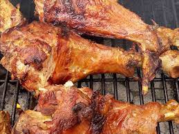

Grilled Turkey Legs

Spicy Grilled Turkey Leg
Ingredients
- 1 (2 liter) bottle lemon-lime flavored carbonated beverage
- 2 tablespoons sugar
- 2 tablespoons hot sauce
- 1 tablespoon crushed red pepper flakes
- 1 tablespoon black pepper
- 1 large sweet onion, sliced
- 4 turkey legs
- 2 tablespoons honey
- 1 tablespoon steak seasoning
Steps
- Fill a large pot with lightly salted water and bring to a rolling boil. Stir in macaroni and return to a boil. Cook pasta uncovered, stirring occasionally, until tender yet firm to the bite, about 8 minutes. Drain and transfer pasta to a slow cooker.
- Add butter to pasta and stir until melted; season with salt and pepper. Sprinkle about 1/2 of the Cheddar cheese over pasta and stir.
- Whisk evaporated milk and eggs together in a bowl until smooth; stir into pasta mixture.
- Whisk milk and condensed soup together in a bowl until smooth; stir into pasta mixture.
- Sprinkle remaining cheese over pasta mixture; garnish with paprika.
- Cook on Low for 3 hours.
- Serve hot and enjoy!